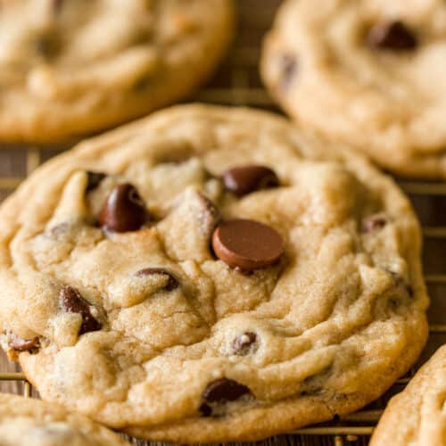

Chocolate Chip Cookie Recipe

Description
This is a fantastic recipe for easy, delicious chocolate chip cookies!
Ingredients
- 2-1/4 cups all-purpose flour
- 1 teaspoon baking soda
- 1 cup butter, softened
- 3/4 cup granulated sugar
- 1 teaspoon vanilla extract
- 2 large eggs
- 2 cups chocolate morsels
Steps
- Preheat oven to 375 degrees fahrenheit.
- Combine flour, baking soda and salt in small bowl. Beat butter, granulated sugar, brown sugar and vanilla extract in large mixer bowl until creamy. Add eggs, one at a time, beating well after each addition. Gradually beat in flour mixture. Stir in morsels and nuts. Drop by rounded tablespoon onto ungreased baking sheets.
- Bake for 9 to 11 minutes or until golden brown. Cool on baking sheets for 2 minutes; remove to wire racks to cool completely.